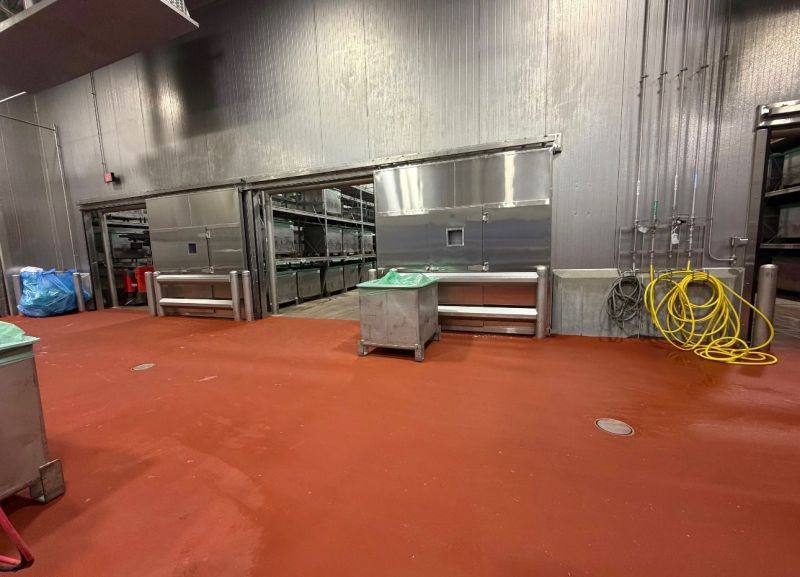
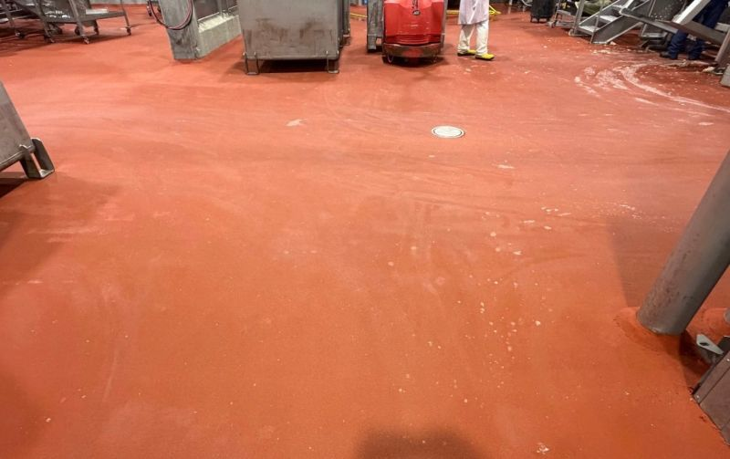

Sometimes the best sales pitch is a test patch.
When this meat processor first brought us in, we did not quote the whole room. We installed a small section and told them to use the space the way they normally would. Forklifts, wash downs, hot water, production traffic, and the usual abuse that tells you pretty quickly whether a floor belongs in a food plant.
It held up. That patch did what it was supposed to do, and the customer was ready to move forward. This Labor Day weekend project was the latest of several rooms we have now completed for them.

Let the Plant Test It First
A food plant can read a brochure, look at samples, and sit through a presentation, but none of that matters as much as what happens once the floor is under real use. A small test patch takes the guesswork out of it. The plant can run carts, forklifts, wash downs, hot water, and sanitation across the surface before committing to a larger scope.
That approach is not complicated. It is just honest. If the system performs, the customer has proof from their own room. If it does not, everyone learns that before a larger shutdown is on the calendar.
Old Coating Out, STX In
For this room, the crew jackhammered out about 3,100 square feet of old coating and replaced it with SaniCrete STX at 3/8 inch. The system was reinforced with twisted stainless steel and tied into cant cove throughout the room.
That matters in a meat processing space. The floor has to handle traffic, wash downs, heat, cleaning cycles, and the wall-to-floor details that make a room easier to keep clean. The surface is only one part of the work. Edges, coves, drains, penetrations, and transitions all decide whether the room works once production is moving again.

Back to Production Tuesday
The schedule was straightforward: use the holiday weekend, get the old coating out, install the new STX floor, and give the plant the room back when production needed it. The floor was ready Tuesday morning.
Not every customer wants to bet the whole room on a first conversation. That is fine. A small section can answer the question better than a sales meeting. If you are not sure a system will perform in your facility, make it prove itself where the work actually happens.